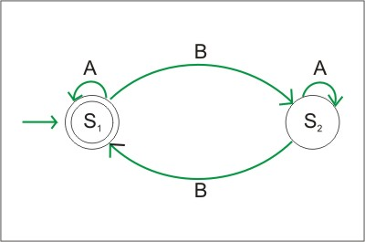
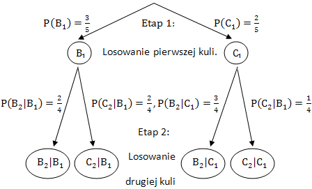

Języki formalne i teoria transformacji
Od automatów deterministycznych, niedeterministycznych i z epsilon-przejściami, przez wryażenia regularne, języki i gramatyki, do kompilatorów. Ta dziedzina informatyki jest niezbędna dla teoretycznych podstaw działanie komputerów.
Rachunek prawdopodobieństwa
O ile rachunek prawdopodobieństwa może nie wydawać się najbardziej ekscytującą gałęzią matematyki, jego przydatność jest nieoceniona. Jednak jego możliwości pozwalają na ułatwienie życia w różnych sytuacjach, na przykład na ocenę potencjalnych zysków i ryzyka niektórych decyzji, od gry w karty po inwestowanie na giełdzie. Rachunek prawdopodobieństwa jest też podstawą do statystyki.